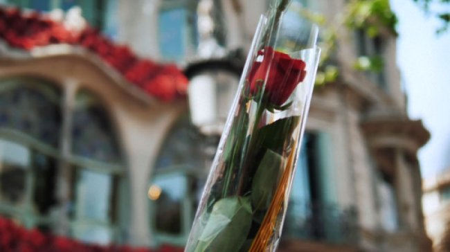
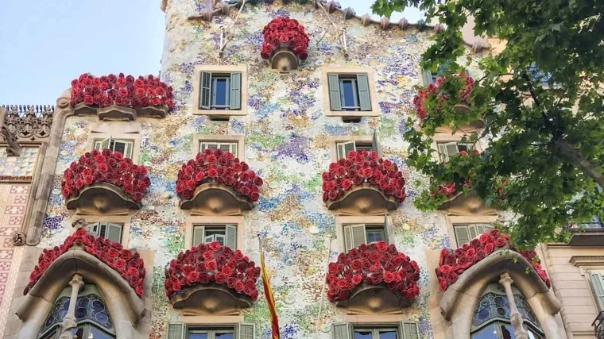
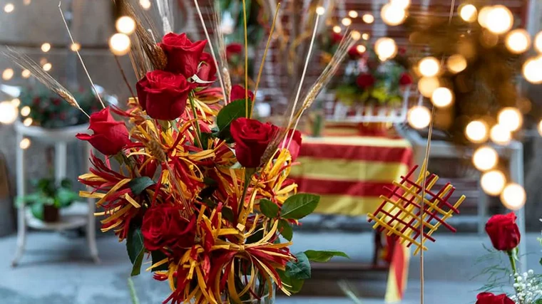
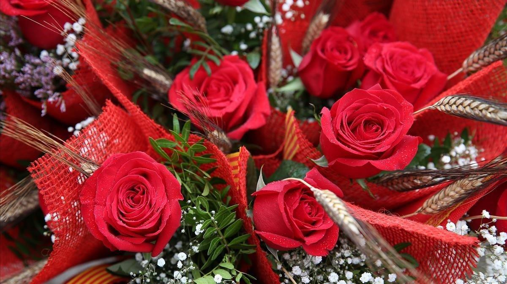
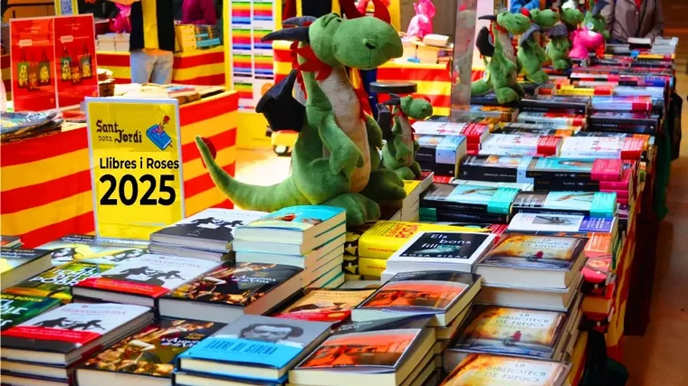
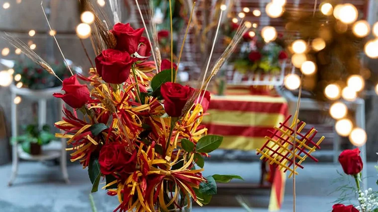
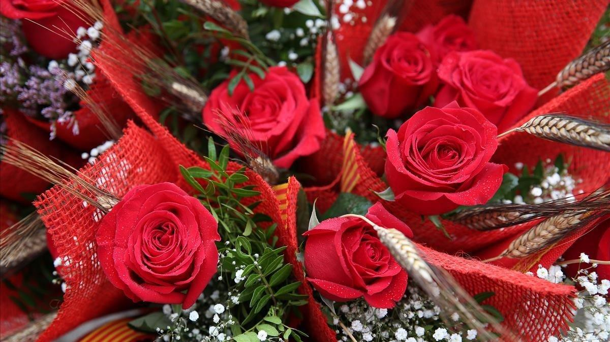
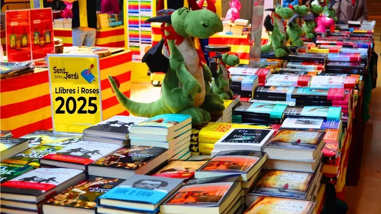

Regalar rosas es lo más significativo de esta festividad. Cualquiera puede hacer esta ofrenda, aunque como dicta la tradición es el hombre quien debe entregarle una rosa a su amada. Según cuenta la leyenda, Sant Jordi salvó a su princesa matando al dragón de cuya sangre brotó un rosal. Es por eso que algunos la consideran el San Valentín catalán, porque se dice que Sant Jordi es, por excelencia, el patrón de los enamorados en Catalunya.

 




